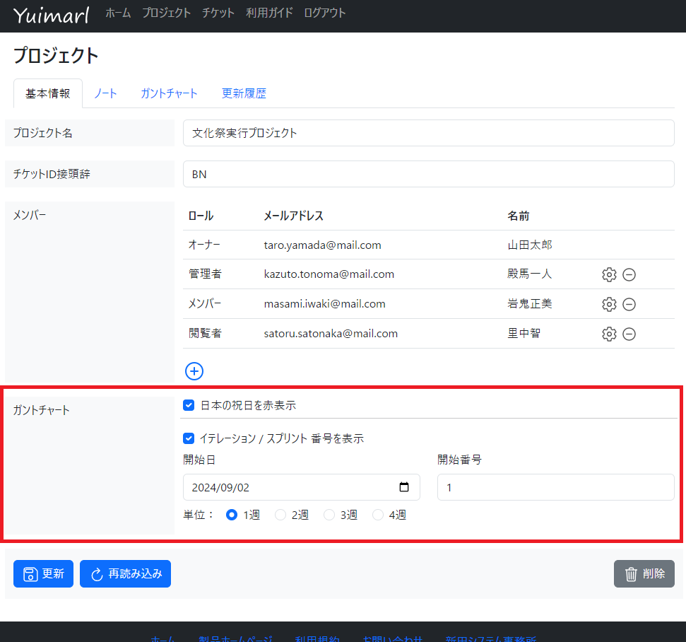
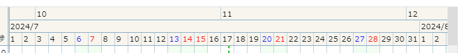
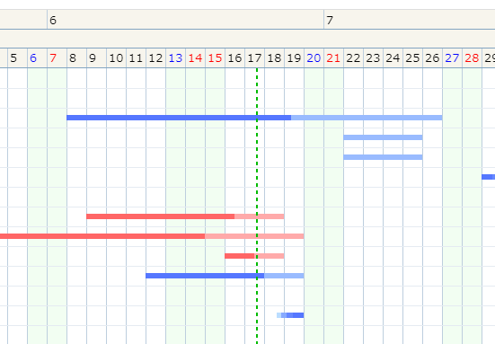

ガントチャート
プロジェクト情報画面のガントチャートタブの使い方について、ご説明いたします。
ガントチャートの意味や一般的な説明については、次のページをご参照ください。
ガントチャート (Wikipedia)
Yuimarl のガントチャート機能は、プロジェクトごとに、１つのガントチャートを作成することができます。
プロジェクトとタスクのスケジュールや進捗状況を確認することができます。
縦方向には、チケットの親子関係に従ってツリー状に表示されます。
横方向には、チケットの開始日から終了日までが、青色または赤色の棒状に表示されます。
{kind=link}
プロジェクトの設定
はじめに、プロジェクト情報画面 の基本情報タブにある「ガントチャート」欄で、ガントチャートの設定を行います。
{kind=link}
| 項目 | 説明 |
|---|---|
| 日本の祝日を赤表示 | チェックを付けると、ガントチャート右側のカレンダーで、日本の祝日が赤く表示されます。 |
| イテレーション / スプリント 番号を表示 | チェックを付けると、ガントチャート右側のカレンダーの上部に、イテレーション番号、スプリント番号が表示されます。 (参照) イテレーションとは？スプリントとの違いや開発プロセスを解説！ |
| 開始日、開始番号、単位 | イテレーション / スプリント の開始日、開始番号、単位を指定します。 たとえば、開始日を「2024/07/03」、開始番号を「10」、単位を「2週」とした場合は、 2024/07/03～2024/07/16 が 10 2024/07/17～2024/07/30 が 11 2024/07/31～2024/08/13 が 12 ・・・ となります。  |
{kind=link}
チケットの設定
ガントチャートに表示するチケットの、チケット情報画面 の基本情報タブで、「ガントチャートに表示する」にチェックを付けます。
そのチケットに親チケットが存在する場合は、親チケットでも、「ガントチャートに表示する」にチェックを付ける必要があります。
ガントチャート画面の操作方法
縦方向のツリーでは、チケットの ID、チケット名、開始日、終了日、進捗が表示されます。
ID をクリックすると、チケット情報ダイアログが表示されます。
チケット名の前の□は、子チケットがあって、開いていれば－、閉じていれば＋になります。開いたり閉じたりした状態は、使っているブラウザに保存されます。
{kind=link}
「完了済みを表示」を ON にすると、進捗が 100（完了済み）のチケットがツリーに表示されます。（選択状態は使っているブラウザに保存されます）
「進捗遅れを赤く表示」を ON にすると、進捗が遅延しているチケットが赤く表示されます。（選択状態は使っているブラウザに保存されます）
遅延の判定と表示は、以下のように行われます。
- 開始日が過ぎているのに進捗が 0 の場合、開始日が赤く表示されます。
- 終了日が過ぎているのに進捗が 100 でない場合、終了日が赤く表示されます。
- 右側のカレンダーに緑色の破線で表示される現在日時よりも、進捗が遅れている場合、棒が赤く表示されます。

{kind=link}
ツリー表示されたチケットを、ドラッグ＆ドロップで移動することができます。
たとえば、上の画像の「PJ30: [BUG] 名前が空のチケットが登録できる」というチケットを、「PJ3: Doing」の下にドラッグ＆ドロップで移動することができます。
移動した状態を保存するには、「更新」ボタンをクリックしてください。
〔参照〕 カンバンボードのようなガントチャート